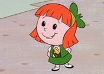
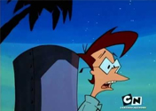
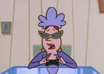

¿Quién es Johnny bravo?

Johhny Bravo es el protagonista de la serie. Él es increíblemente narcisista y coqueto. Por lo general sus coqueteos con las damas terminan con ellas dándole un fuerte golpe que lo deja tirado en el suelo.
Es conocido por su aspecto musculoso, su gran jopo rubio y usar vaqueros de jean, camiseta negra y gafas.
¿Quiénes son sus amigos?

Suzy: Una pequeña chica pelirroja inteligente del barrio (a menudo llamado " pequeña niña del vecindario" por Johnny), que es muy astuta y charlatána.

Carl: Un nerd local, también conocido como Carl Shocker , considerado por muchos (especialmente Johnny) como muy molesto. Él es el "mejor amigo" Johnny . Él es un genio local y un geek, que es muy inteligente, pero algo excéntrico y tímido.

Bunny Bravo: Madre de Johnny Bravo. Ella está muy dedicada a su hijo, pero como resultado de saber del bajo nivel intelectual de su hijo y la actitud de mujeriego, no siempre lo trata a él y sus problemas en serio.